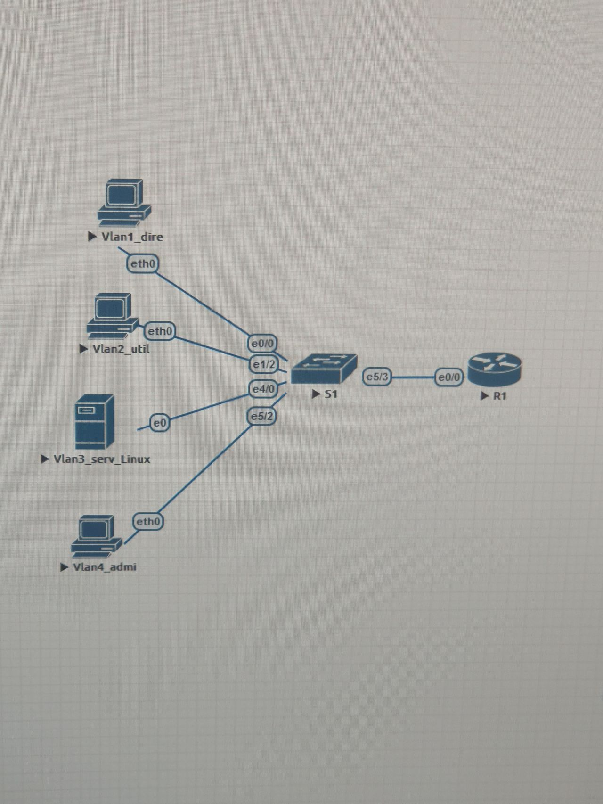
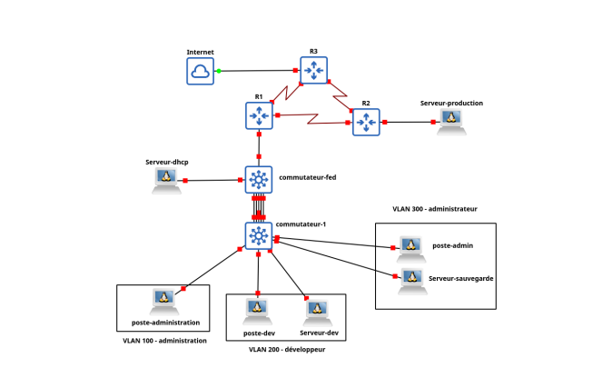
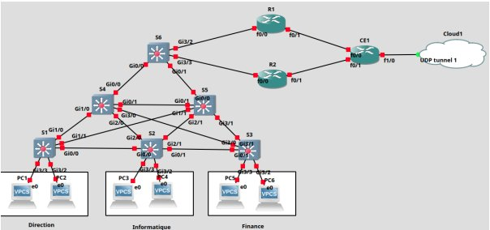
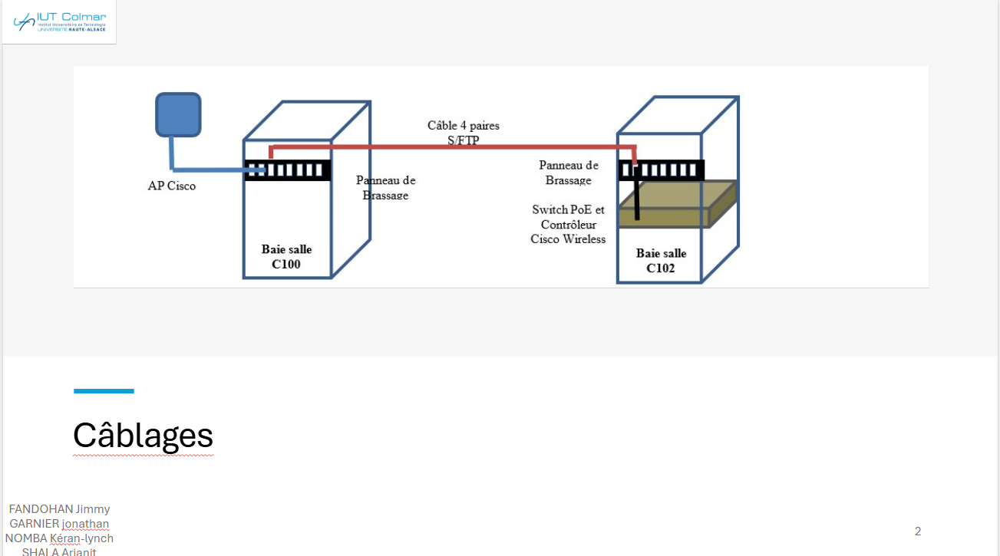
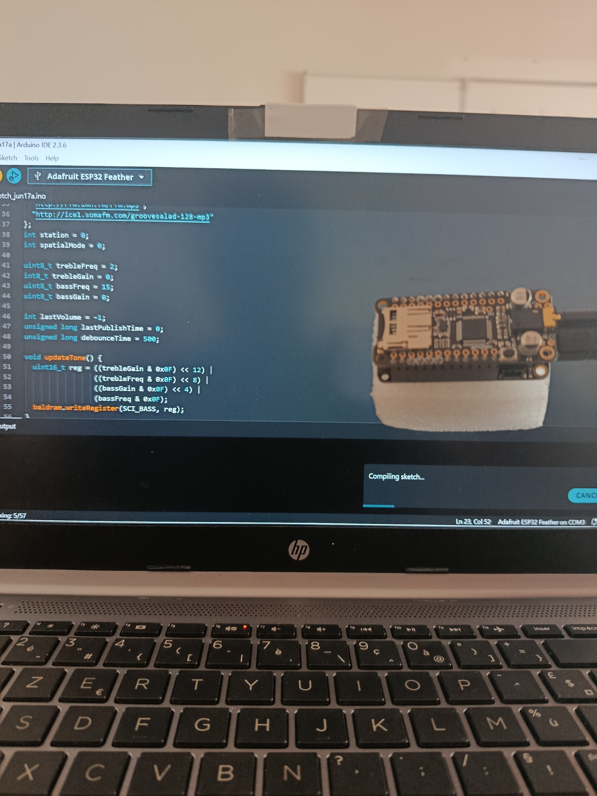
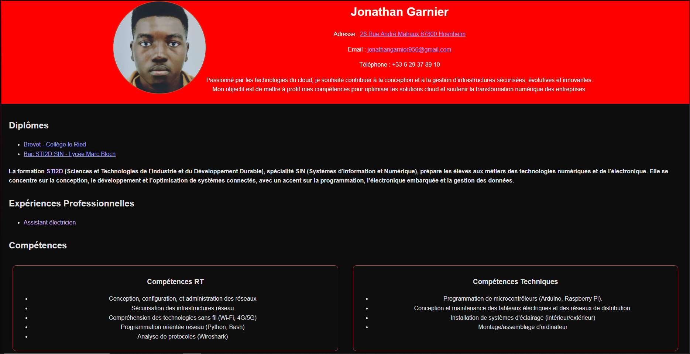
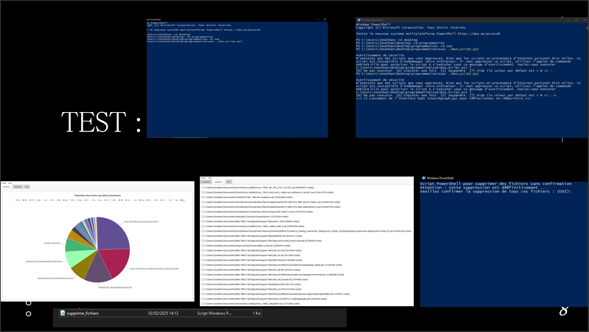
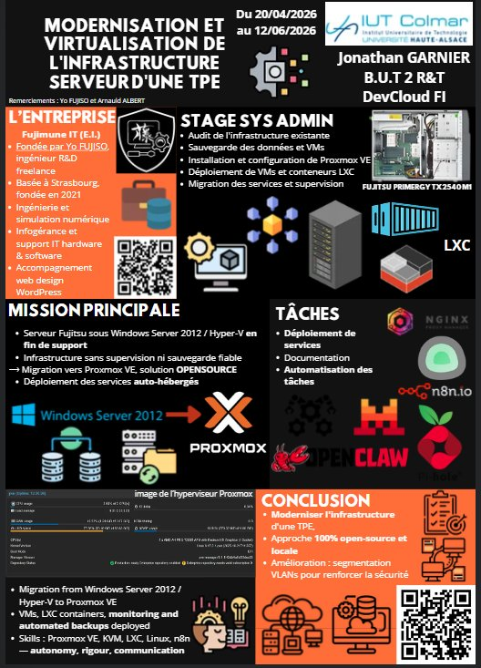
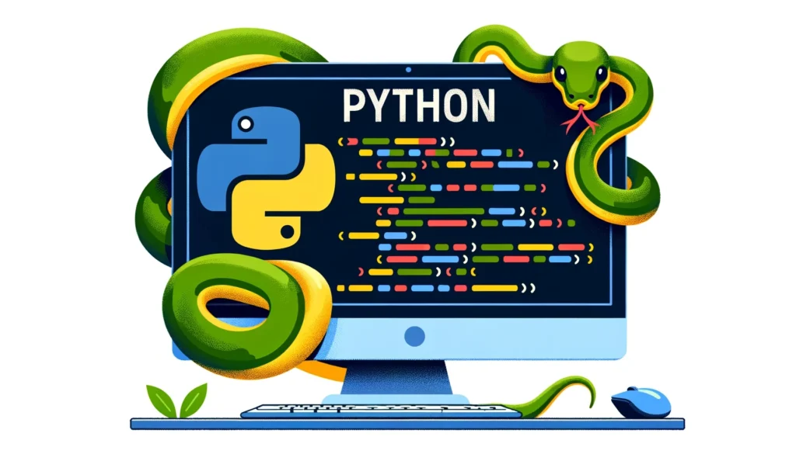

La convergence MST causait des coupures intermittentes lors des tests. J'ai investigué avec show spanning-tree detail et ajusté les priorités de bridge pour forcer S6 comme Root Bridge, stabilisant immédiatement la topologie.
J'ai proposé d'ajouter un VLAN 200 dédié au transit routeurs, séparant le trafic de routage du trafic utilisateur — une décision qui a simplifié le débogage et renforcé la sécurité des flux.
La démarche hiérarchique (accès / distribution / cœur) est applicable à tout réseau de campus. La rigueur de documentation (schémas, tables d'adressage, procédures) est transférable à tout contexte professionnel.


La Web Radio perdait le flux après quelques minutes. En analysant les logs Arduino et les trames MQTT avec Wireshark, j'ai identifié un timeout de keepalive et l'ai corrigé en ajustant l'intervalle de publication PubSubClient.
J'ai intégré WiFiManager de ma propre initiative, évitant de coder les identifiants Wi-Fi en dur dans le firmware — rendant le projet réutilisable dans n'importe quel environnement sans recompilation.
La méthodologie site-survey (mesure, ajustement, validation) s'applique à tout déploiement Wi-Fi professionnel. La maîtrise MQTT est directement transférable aux projets IoT industriels.


Les sorties WMI variaient selon les versions de Windows, cassant le parsing. J'ai utilisé des expressions régulières robustes avec le module re et ajouté des cas de fallback pour les champs manquants, rendant le script universel.
J'ai ajouté un système de logs colorés par niveau (INFO/WARNING/ERROR) non demandé dans le cahier des charges, facilitant le diagnostic rapide lors des tests sur plusieurs machines simultanément.
La pipeline données brutes → nettoyage → visualisation est applicable à n'importe quel traitement de logs réseau (syslog, SNMP traps). La maîtrise PowerShell/WMI est directement utile en administration Windows Server.

La migration des VMs Hyper-V vers Proxmox nécessitait une conversion des formats de disque (VHDX → qcow2). J'ai utilisé qemu-img convert et testé chaque VM dans un environnement isolé avant de couper l'ancien serveur, évitant toute perte de données.
J'ai proposé d'intégrer Pi-hole comme DNS filtrant au niveau de l'infrastructure entière, bloquant la publicité et les domaines malveillants pour tous les équipements de la TPE sans configuration par poste.
La démarche audit → migration → validation est applicable à toute infrastructure d'entreprise. La maîtrise de Proxmox VE (KVM + LXC) est directement transférable aux environnements Cloud hybrides professionnels.

Nginx Proxy Manager ne résolvait pas les noms DNS internes des autres containers LXC. J'ai configuré Pi-hole comme résolveur DNS local dans les paramètres réseau de Proxmox, permettant à tous les services de communiquer par nom plutôt que par IP.
J'ai proposé d'automatiser les tâches récurrentes de la TPE avec n8n (envoi de rapports, notifications) sans que cela soit dans le cahier des charges initial — démontrant de l'autonomie et un sens de la valeur ajoutée.
L'approche "un service = un container" est le fondement de l'architecture microservices en production. La maîtrise de la configuration réseau par code (IaC) est directement transférable à Terraform, Ansible ou tout outil DevOps.